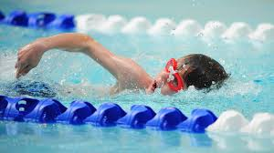

I would like to take this opportunity to welcome you to my portfolio. Here i will showcase some of the projects i have worked on as a developer and will also introduce myself to you by giving you a brief insight into the exiting journey of my professional and personal life.
This would include the projects i have developed, collaborated and contributed to. It will also include my personal life where i will explore the my life as a student to the day i started working. I will also discuss my hobbies and interests
Although I have not worked on any software development project before, be it small personal ones to large corporate projects with many collaporatoin and contributers, I will only mention the few i had put together in my first week in Moringa school.
Here is a list of the porjects i have worked on;
I decided to take up software development becouse i think it will open up a new career for me in the tech industry which has exploded in recent past. Other aspects of my personal live include;
Swimming
swimming was always a thing for me.Dancing
I am not a great dancer but who said dancing is professionals only.Reading Novels
They say books grow the mind.Playing Football
Football is my way to stay in touch with friends